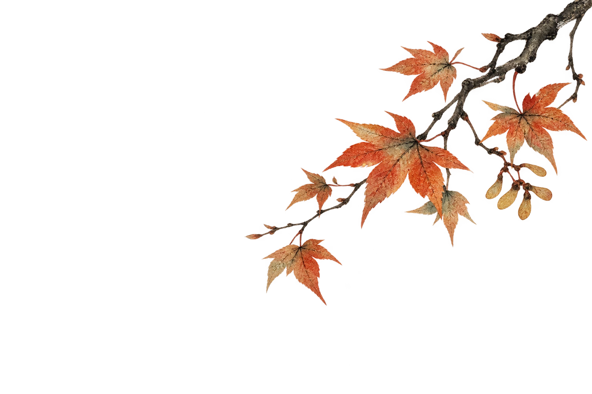
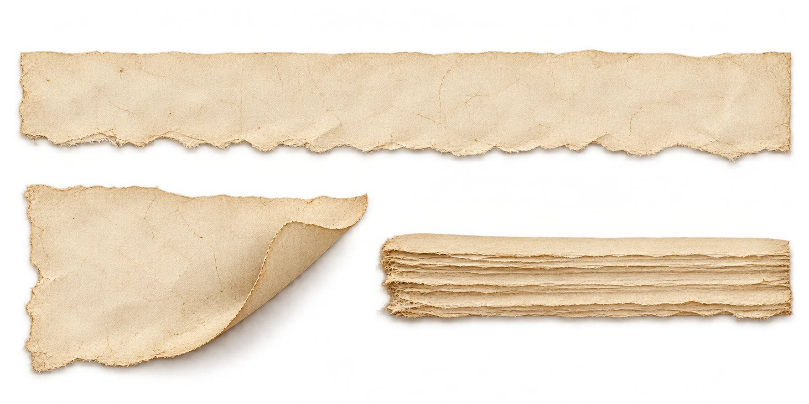
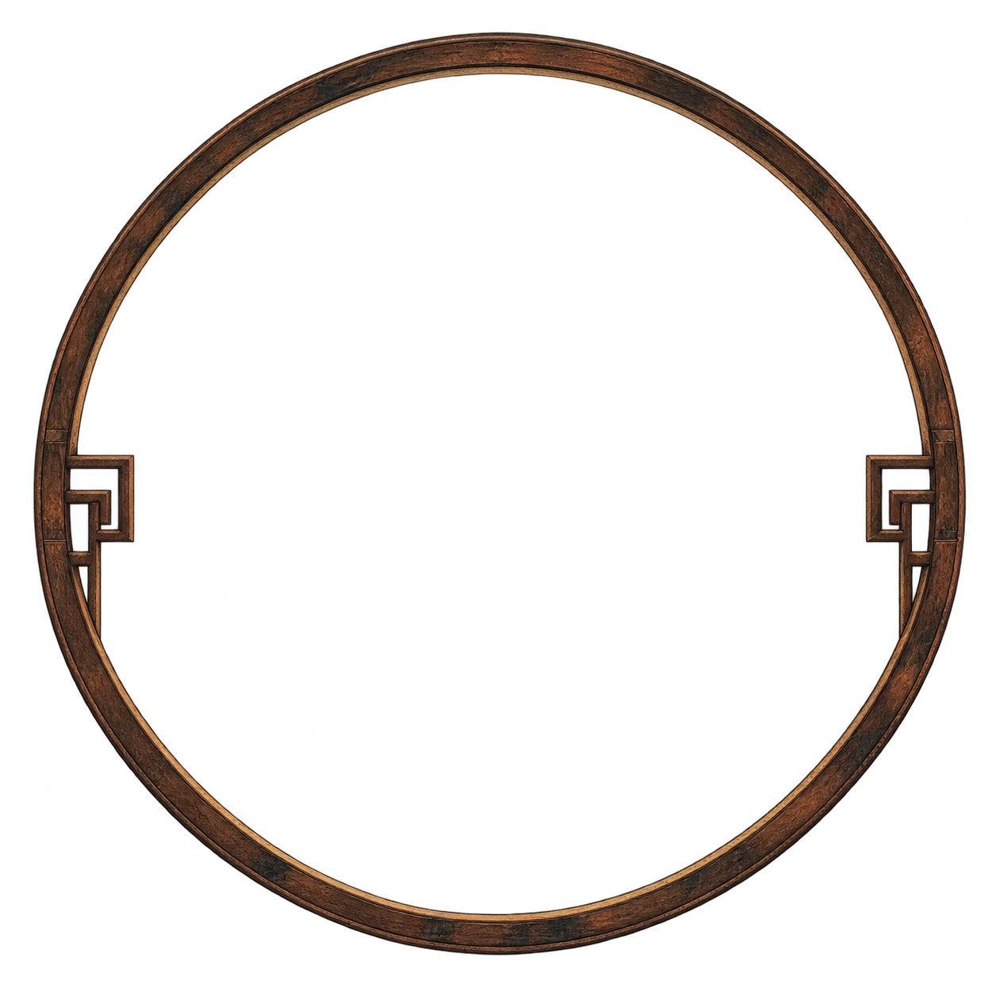

壹 · 以日为单位
日历里的山河


十月2026
丙午年 · 马
公历史事农历纪事◇ 节气
← → 翻日 · ↑ ↓ 翻周 · 1 2 3 换尺度

霜降
九月中
霜降
节气释义 · 月令七十二候
一 日 一 页 · 一 眼 千 年
翻一页日历，穿一回千年。
三种尺度 · 同一段山河
翻日历、展长卷，或循着节气，走进四时。
壹 · 以日为单位



节气释义 · 月令七十二候
AI 生成画作 · 艺术意象，非事件实录 ·
自 2026 年回望
2026
选一段距离，回到那个时候
纪年回溯后，长卷会停在那个朝代